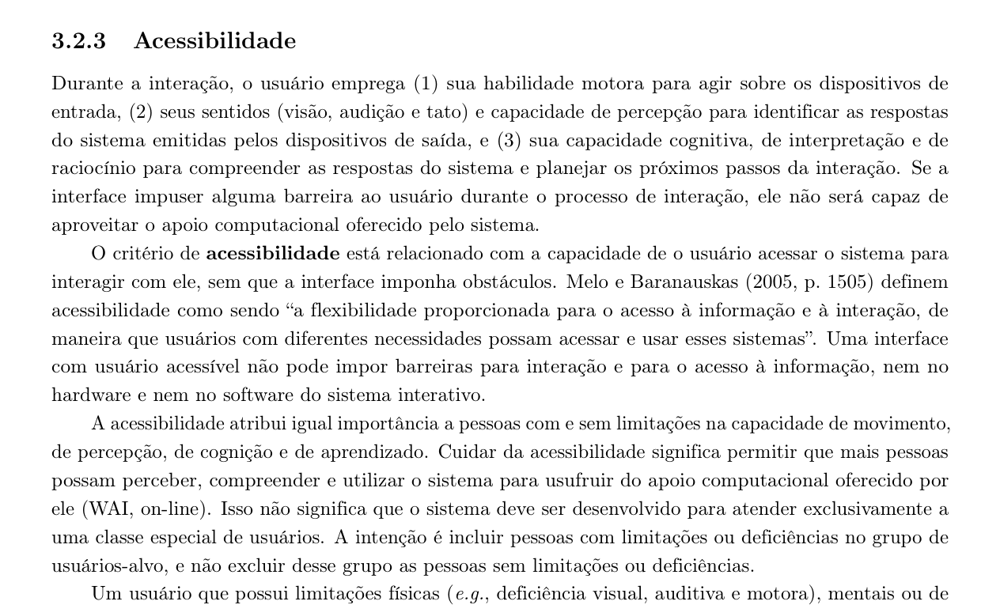
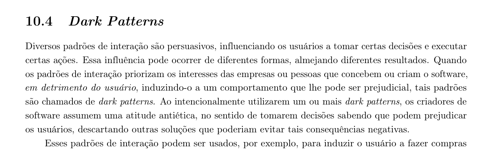
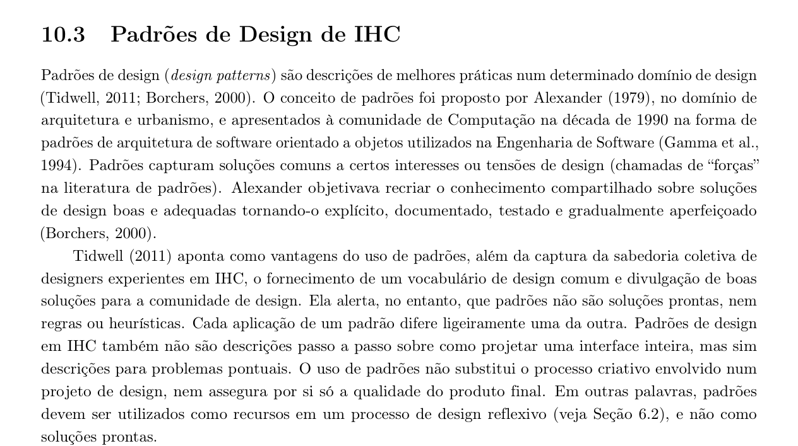
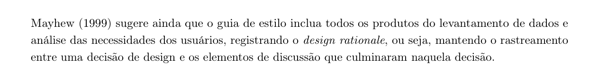

Tabela de Contribuição
| Membro | Contribuição |
|---|---|
| Daniel da Silva Batista | Concepção, planejamento metodológico e elaboração integral da Lista de Verificação (LV) da Etapa 3 para auditoria do Grupo 08, formulação técnica e preenchimento dos itens 11 e 12 (Princípios Gerais de Projeto), formulação do item extra 19 (Dark Patterns e Projeto para Erros), consolidação da matriz de inspeção e gravação do vídeo de apresentação da avaliação cruzada. |
| Pedro Rocha Ferreira Lima | Formulação técnica e preenchimento de seus tópicos específicos atribuídos: itens 10, 13 e 14 (Características da Plataforma e Metas de Usabilidade) e item extra 18 (Acessibilidade WCAG 2.1). |
| Leonardo da Silva Lopes Júnior | Formulação técnica e preenchimento de seus tópicos específicos atribuídos: itens 15 e 16 (Guia de Estilo e sua estrutura canônica) e item extra 21 (Design Tokens e Grid Modular). |
| Arthur Sismene Carvalho | Formulação técnica e preenchimento de seus tópicos específicos atribuídos: item 17 (Correspondência do Guia de Estilo com o site avaliado), item extra 20 (Rastreabilidade com Personas/Cenários) e suporte à revisão. |
| Gemini | Apoio na estruturação textual, organização das tabelas e formatação em Markdown (conforme Política de Uso de IA). |
Fonte: Daniel da Silva Batista (2026).
Verificação — Etapa 3 (Grupo 08 — Grupo +1)
1. Objetivo e Escopo
Este artefato reúne a lista de verificação da Etapa 3 do Grupo 08, elaborada pelo Grupo 07 no âmbito da avaliação cruzada (Grupo +1) conforme as diretrizes pedagógicas do professor André Barros de Sales (SALES, 2026). A inspeção recai sobre os artefatos de Princípios Gerais de Projeto, Metas de Usabilidade, Características da Plataforma e Guia de Estilo publicados no GitHub Pages do Grupo 08, cujo objeto empírico de estudo é o Fórum Diolinux Plus.
A avaliação é composta por 22 itens de verificação, organizados em três seções: 1. 10 itens de desenvolvimento do projeto (Seção 5), relativos à padronização, governança técnica e conformidade editorial da wiki; 2. 8 itens de conteúdo da disciplina (Itens 10 a 17) (Seção 6), correspondentes aos critérios oficiais de IHC para a Entrega 3, acompanhados de autor individual por item e fotos dos trechos das obras de referência da disciplina; 3. 4 itens elaborados pelo grupo avaliador (Seção 7), focados em acessibilidade web, blindagem contra padrões obscuros, rastreabilidade projetual e especificação de design tokens.
2. Instruções de Preenchimento
Cada critério admite uma única classificação:
- Sim — o projeto do Grupo 08 atende integral e satisfatoriamente ao critério solicitado;
- Não — o projeto não contempla o critério ou a informação está ausente;
- Incompleto — o projeto atende parcialmente ao que o critério exige, carecendo de complementação ou correções.
Para cada item avaliado, é registrada a data da inspeção, a justificativa analítica com a indicação precisa das evidências ou inconformidades encontradas no repositório do Grupo 08 e o autor do Grupo 07 responsável pelo item.
3. Vídeo de Verificação — Etapa 3 (Grupo 08)
O vídeo a seguir documenta a sessão de inspeção e auditoria realizada pelo Grupo 07 sobre os artefatos da Etapa 3 disponibilizados pelo Grupo 08.
Fonte: Daniel da Silva Batista (2026).
- Categoria no YouTube: não listado;
- Participante: Daniel da Silva Batista;
- Data da gravação: 10/10/2026.
4. Síntese dos Resultados
A Tabela 1 consolida a distribuição analítica das avaliações realizadas sobre os artefatos da Etapa 3 do Grupo 08.
Tabela 1: Síntese das Respostas da Inspeção do Grupo 08
| Bloco | Itens | Sim | Incompleto | Não |
|---|---|---|---|---|
| Desenvolvimento do projeto | 10 | 4 | 5 | 1 |
| Conteúdo da disciplina (Etapa 3) | 8 | 4 | 3 | 1 |
| Elaborados pelo grupo | 4 | 0 | 2 | 2 |
| Total Geral | 22 | 8 | 10 | 4 |
Fonte: Daniel da Silva Batista (2026).
5. Itens de Desenvolvimento do Projeto
A Tabela 2 apresenta a inspeção dos 10 itens gerais de desenvolvimento do projeto exigidos para a entrega da Etapa 3 (SALES, 2026). Todos os itens foram avaliados em 10/10/2026.
Tabela 2: Itens de Desenvolvimento do Projeto
| Item | Critério Verificado | Resposta | Observação |
|---|---|---|---|
| 1 | O GitHub Pages do projeto possui o histórico de versão padronizado? | Incompleto | As tabelas de histórico estão presentes, mas em caracteristicas-da-plataforma.md e principios-gerais-de-projeto.md a coluna de revisores consta literalmente como "Pendente", evidenciando falta de fechamento do ciclo de revisão por pares (fato apontado pelo próprio Grupo 08 no item 11 de sua autoavaliação). |
| 2 | O GitHub Pages do projeto indica o(s) autor(es) e o(s) revisor(es) para cada artefato? | Incompleto | Embora os autores estejam identificados com links para o GitHub, a ausência de registro formal dos revisores nas versões 2.0 de características e princípios gerais compromete a rastreabilidade da revisão técnica. |
| 3 | O GitHub Pages do projeto possui referências bibliográficas e/ou bibliografia em todos os artefatos? | Sim | Presente em conformidade com as normas acadêmicas nos artefatos da Etapa 3, citando Barbosa et al. (2021), Mayhew (1999), Nielsen (1993) e Rogers et al. (2013). |
| 4 | No GitHub Pages do projeto, as tabelas e imagens possuem legenda e fonte e são chamadas dentro do texto? | Incompleto | O artefato de Metas de Usabilidade atende plenamente; contudo, no Guia de Estilo há quatro capturas de tela órfãs (sem chamada textual explícita), em Características da Plataforma as tabelas de escopo carecem de numeração formal e em Princípios Gerais a matriz heurística não foi identificada como tabela numerada (reconhecido no item 13 da autoavaliação do Grupo 08). |
| 5 | O GitHub Pages do projeto possui um texto fazendo uma introdução dos artefatos? | Sim | Todos os artefatos da Etapa 3 (caracteristicas-da-plataforma.md, principios-gerais-de-projeto.md, metas-de-usabilidade.md, guia-de-estilo.md e entrega3.md) abrem com contextualização introdutória sobre o Fórum Diolinux Plus e os objetivos da etapa. |
| 6 | O GitHub Pages do projeto possui o cronograma executado, indicando quem realizou cada artefato ou atividade e as datas de início e fim? | Incompleto | O documento planejamento/cronograma-executado.md registra apenas as atividades executadas nas Entregas 1 e 2, estando pendente a inclusão da tabela de atividades executadas da Entrega 3 (admitido no item 14 da autoavaliação do Grupo 08). |
| 7 | O GitHub Pages do projeto possui ata(s) da(s) reunião(ões), com data, horário de início e fim, participantes, objetivo e atividades definidas? | Sim | A Ata 5 (atas/ata5.md), referente ao planejamento da Entrega 3 (05/10/2026), documenta adequadamente horário, presentes, pauta e deliberações de divisão de tarefas. |
| 8 | O GitHub Pages do projeto possui a gravação da reunião do grupo? | Sim | A Ata 5 do Grupo 08 possui a gravação da reunião da Etapa 3 devidamente incorporada via vídeo. |
| 10 | O GitHub Pages do projeto possui tabela de contribuição no início do artefato, com o nome de todos os integrantes? | Sim | Os artefatos da Etapa 3 possuem tabela de contribuição posicionada no início do documento, identificando os papéis dos integrantes e revisores. |
Fonte: Daniel da Silva Batista (2026).
6. Itens de Conteúdo da Disciplina
A Tabela 3 detalha a avaliação dos 8 itens de conteúdo da disciplina (itens 10 a 17) para a Etapa 3.
Tabela 3: Itens de Conteúdo da Disciplina (Etapa 3)
| Item | Critério Verificado | Resposta | Observação | Autor |
|---|---|---|---|---|
| 10 | As características da plataforma para o projeto? | Sim | O documento analise-requisitos/caracteristicas-da-plataforma.md detalha com rigor as propriedades técnicas da plataforma Discourse, a arquitetura client-side (Ember.js), suporte a navegadores e limitações de teste empírico no fórum Diolinux Plus. |
Pedro Rocha Ferreira Lima |
| 11 | Os Princípios Gerais do Projeto que serão utilizados no projeto? Adicionar referência bibliográfica da fonte e foto do texto da referência explicando os Princípios Gerais do Projeto. | Sim | O artefato principios-gerais-de-projeto.md apresenta os princípios de IHC fundamentados em Barbosa e Silva (2010) e Barbosa et al. (2021, Cap. 10), trazendo recortes do livro destacados com marca-texto amarelo. |
Daniel da Silva Batista |
| 12 | Os Princípios Gerais do Projeto contêm os seguintes 8 tópicos: (1) correspondência com expectativas dos usuários; (2) simplicidade nas estruturas das tarefas; (3) equilíbrio entre controle e liberdade do usuário; (4) consistência e padronização (promoção da eficiência); (5) antecipação das necessidades; (6) visibilidade e reconhecimento; (7) conteúdo relevante e expressão adequada; e (8) projeto para erros? Adicionar referência bibliográfica da fonte e foto do texto da referência explicando os tópicos. | Sim | O grupo apresentou apenas 7 tópicos conceituais nas Figuras 1 a 7, omitindo o tópico 8 (Projeto para erros) com seu recorte fotográfico e aglutinando eficiência e antecipação no tópico 5. Ademais, faltou identificar formalmente o autor responsável por cada tópico no corpo do artefato. | Daniel da Silva Batista |
| 13 | As metas de usabilidade que devem ser alcançadas no projeto ou os objetivos de uma avaliação de IHC? Adicionar referência bibliográfica da fonte e foto do texto da referência explicando as metas de usabilidade ou os objetivos. | Sim | O artefato metas-de-usabilidade.md especifica as seis metas de usabilidade de Nielsen (1993) e metas de UX de Rogers et al. (2013), acompanhado da Figura 1 reproduzindo a página 106 de Barbosa e Silva (2021). |
Pedro Rocha Ferreira Lima |
| 14 | A razão da seleção das metas de usabilidade? | Sim | A Seção "Matriz de Priorização das Metas de Usabilidade e UX" (Tabela 2) fundamenta a priorização hierárquica (P1, P2 e P3) vinculando cada meta às tarefas HTA e às personas do Diolinux Plus. | Pedro Rocha Ferreira Lima |
| 15 | O Guia de Estilo do projeto? Adicionar referência bibliográfica da fonte e foto do texto da referência explicando Guia de Estilo. | Não | O artefato guia-de-estilo.md existe e referencia a literatura de IHC no texto, mas não incluiu o recorte fotográfico da página da obra de referência (Barbosa e Silva, 2010, p. 282 / Barbosa et al., 2021) conceituando o que é um Guia de Estilo. |
Leonardo da Silva Lopes Júnior |
| 16 | O Guia de Estilo do projeto possui a seguinte estrutura: 1. Introdução; 2. Resultados de análise; 3. Elementos de interface; 4. Elementos de interação; 5. Elementos de ação; 6. Vocabulário e padrões? Adicionar referência bibliográfica da fonte e foto do texto da referência explicando a estrutura do Guia de Estilo. | Não | O Guia de Estilo do Grupo 08 restringe-se a: Paleta de Cores, Escala Tipográfica e Catálogo de Componentes. Não contempla a estrutura canônica de 6 seções (faltam Resultados de Análise, Elementos de Interação, Elementos de Ação e Vocabulário) e não traz a foto da literatura comprovando a estrutura canônica (Barbosa e Silva, p. 283). | Leonardo da Silva Lopes Júnior |
| 17 | O Guia de Estilo corresponde ao site avaliado? | Sim | O guia é totalmente customizado e contextualizado para a identidade visual do Diolinux Plus e ecossistema Discourse (modo escuro nativo, tokens hexadecimais extraídos da UI e componentes reais de tópicos e alertas). | Arthur Sismene Carvalho |
Fonte: Daniel da Silva Batista (2026).
7. Itens Elaborados pelo Grupo
Esta seção reúne critérios adicionais elaborados pela equipe do Grupo 07 com base no livro de referência da disciplina (Interação Humano-Computador e Experiência do Usuário, BARBOSA et al., 2021). Os itens auditam aspectos avançados de qualidade em IHC, acessibilidade digital, blindagem contra dark patterns, estruturação de padrões de design e rastreabilidade projetual no contexto do repositório do Grupo 08 (Fórum Diolinux Plus). Para cada item elaborado, é apresentada a captura fotográfica do trecho exato da literatura de referência que o fundamenta.
7.1 Item 18 — Acessibilidade em Sistemas Interativos
Tabela 4: Item 18
| Campo | Registro |
|---|---|
| Critério | O Guia de Estilo e as decisões de projeto definem formalmente requisitos de acessibilidade para que a interface não imponha barreiras para a interação e para o acesso à informação, assegurando que usuários com diferentes necessidades e limitações (motoras, visuais, auditivas ou temporárias) possam perceber, compreender e utilizar o sistema sem obstáculos? |
| Resposta | Incompleto |
| Data da avaliação | 09/10/2026 |
| Observação | O Grupo 08 realizou um excelente trabalho ao auditar o contraste cromático da paleta de cores contra o fundo #1E1F24 com base na WCAG 2.1 (Tabela 1 de guia-de-estilo.md). Contudo, o critério está incompleto pois a acessibilidade foi restrita à cor: não foram estabelecidas diretrizes para alvos de toque mínimos móveis (44x44px), navegação por teclado, acessibilidade auditiva/motora ou suporte a leitores de tela. |
| Autor | Pedro Rocha Ferreira Lima |
| Fonte | BARBOSA et al. (2021), Cap. 3, Seção 3.2.3 (Acessibilidade), p. 54. |
Fonte: Pedro Rocha Ferreira Lima (2026).
Figura 1: Referência Bibliográfica — Acessibilidade em Sistemas Interativos

Fonte: BARBOSA et al. (2021, p. 54).
7.2 Item 19 — Prevenção contra Padrões Obscuros (Dark Patterns)
Tabela 5: Item 19
| Campo | Registro |
|---|---|
| Critério | O projeto (nos Princípios Gerais ou no Guia de Estilo) estabelece diretrizes explícitas de conduta ética e blindagem contra dark patterns (padrões de interação persuasivos que priorizam interesses de terceiros em detrimento do usuário, induzindo-o a decisões ou comportamentos prejudiciais)? |
| Resposta | Não |
| Data da avaliação | 09/10/2026 |
| Observação | Não há qualquer menção a salvaguardas éticas contra dark patterns nos artefatos do Grupo 08. Além disso, o grupo omitiu o princípio canônico de "Projeto para Erros" no documento de princípios gerais de projeto, não diagnosticando armadilhas de interface comuns em fóruns de discussão. |
| Autor | Daniel da Silva Batista |
| Fonte | BARBOSA et al. (2021), Cap. 10, Seção 10.4 (Dark Patterns), p. 274. |
Fonte: Daniel da Silva Batista (2026).
Figura 2: Referência Bibliográfica — Prevenção contra Dark Patterns

Fonte: BARBOSA et al. (2021, p. 274).
7.3 Item 20 — Padrões de Design de IHC (Design Patterns)
Tabela 6: Item 20
| Campo | Registro |
|---|---|
| Critério | O Guia de Estilo adota e documenta padrões de design (design patterns) como descrições de melhores práticas para solucionar desafios recorrentes de interface, definindo contexto de aplicação, comportamento interativo e solução gráfica dos componentes? |
| Resposta | Incompleto |
| Data da avaliação | 09/10/2026 |
| Observação | A Seção 3 do Guia de Estilo do Grupo 08 apresenta componentes isolados (Botões, Cards e Campos de Entrada com prints do Figma), mas não formaliza os elementos característicos de um padrão de design (problema endereçado, forças em jogo, quando usar, estados interativos de foco/erro/hover ou diretrizes de implementação). |
| Autor | Arthur Sismene Carvalho |
| Fonte | BARBOSA et al. (2021), Cap. 10, Seção 10.3 (Padrões de Design de IHC), p. 272–273. |
Fonte: Arthur Sismene Carvalho (2026).
Figura 3: Referência Bibliográfica — Padrões de Design de IHC

Fonte: BARBOSA et al. (2021, p. 272).
7.4 Item 21 — Rastreamento das Decisões de Design (Design Rationale) no Guia de Estilo
Tabela 7: Item 21
| Campo | Registro |
|---|---|
| Critério | O Guia de Estilo mantém o registro do design rationale, isto é, o rastreamento formal e explícito entre as decisões tomadas e os artefatos precedentes de levantamento e análise de requisitos (perfil de usuário, personas, cenários e análise de tarefas)? |
| Resposta | Não |
| Data da avaliação | 09/10/2026 |
| Observação | O Guia de Estilo do Grupo 08 não realiza qualquer rastreamento com as personas, cenários ou análises de tarefas elaboradas na Etapa 2. Os componentes e estilos são apresentados de forma isolada, sem registrar a justificativa de design que culminou em cada escolha. |
| Autor | Leonardo da Silva Lopes Júnior |
| Fonte | BARBOSA et al. (2021), Cap. 10, Seção 10.5 (Guias de Estilo), p. 282; MAYHEW (1999). |
Fonte: Leonardo da Silva Lopes Júnior (2026).
Figura 4: Referência Bibliográfica — Rastreamento e Design Rationale no Guia de Estilo

Fonte: BARBOSA et al. (2021, p. 282).
8. Referências Bibliográficas
BARBOSA, Simone D. J.; SILVA, Bruno S. da. Interação Humano-Computador. Rio de Janeiro: Elsevier / Campus, 2010.
BARBOSA, Simone D. J.; SILVA, Bruno S. da; SILVEIRA, Milene S.; GASPARINI, Isabela; DARIN, Ticianne; BARBOSA, Gabriel D. J. Interação Humano-Computador e Experiência do Usuário. 1. ed. [S. l.]: Autopublicação, 2021. ISBN: 978-65-00-19677-1.
MARCUS, Aaron. Graphic Design for Electronic Displays. New York: ACM Press, 1992.
MAYHEW, Deborah J. The Usability Engineering Lifecycle: A Practitioner's Handbook for User Interface Design. San Francisco: Morgan Kaufmann, 1999.
NIELSEN, Jakob. Usability Engineering. Boston: Academic Press, 1993.
NORMAN, Donald A. The Design of Everyday Things. New York: Basic Books, 1988 (edição revista em 2013).
ROGERS, Yvonne; SHARP, Helen; PREECE, Jennifer. Design de Interação: Além da Interação Humano-Computador. 3. ed. Porto Alegre: Bookman, 2013.
SALES, André Barros de. Plano de ensino FIHC 022026 – Turma 01. Brasília: FCTE/UnB, 2026.
W3C. Web Content Accessibility Guidelines (WCAG) 2.1. World Wide Web Consortium, 2018. Disponível em: https://www.w3.org/TR/WCAG21/. Acesso em: 09 out. 2026.
9. Histórico de Versões
| Versão | Data | Descrição | Autor(es) | Revisor(es) |
|---|---|---|---|---|
1.0 |
09/10/2026 | Concepção e elaboração integral da Lista de Verificação da Etapa 3 do Grupo 08 (22 itens), auditoria técnica detalhada dos artefatos do repositório, fundamentação bibliográfica e síntese dos resultados. | Daniel da Silva Batista | Pedro Rocha Ferreira Lima, Arthur Sismene Carvalho, Leonardo da Silva Lopes Júnior |